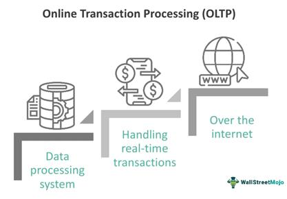

La definición principal de las transacciones (económicas o financieras) restablece la base de la mayoría de los sistemas OLTP, por lo que el procesamiento de transacciones en línea suele implicar la inserción, actualización y/o supresión de pequeñas cantidades de datos en un almacén de datos para recopilar, gestionar y proteger esas transacciones. Normalmente, una aplicación web, móvil o empresarial realiza un seguimiento de todas esas interacciones o transacciones con clientes, proveedores o socios, y las actualiza en la base de datos OLTP. Los datos de esta transacción almacenados en la base de datos son fundamentales para las empresas y se utilizan para la generación de informes o se analizan para la toma de decisiones basada en datos.
Permite el procesamiento de datos rápido y preciso que hay detrás de los cajeros automáticos y la banca en línea, las cajas registradoras y el comercio electrónico, y muchos otros servicios con los que interactuamos todos los días. Una transacción en una base de datos es un cambio, inserción, eliminación o consulta en una base de datos.
La arquitectura más común de un sistema OLTP que utiliza datos transaccionales es una arquitectura de tres niveles que suele estar formada por un nivel de presentación, un nivel de lógica de negocio y un nivel de almacén de datos.
El nivel de presentación es el front-end, donde la transacción se origina a través de una interacción humana o se genera por el sistema.
El nivel lógico consta de reglas que verifican la transacción y garantizan que todos los datos necesarios para completar la transacción estén disponibles.
El nivel de almacén de datos almacena la transacción y todos los datos relacionados con ella.
